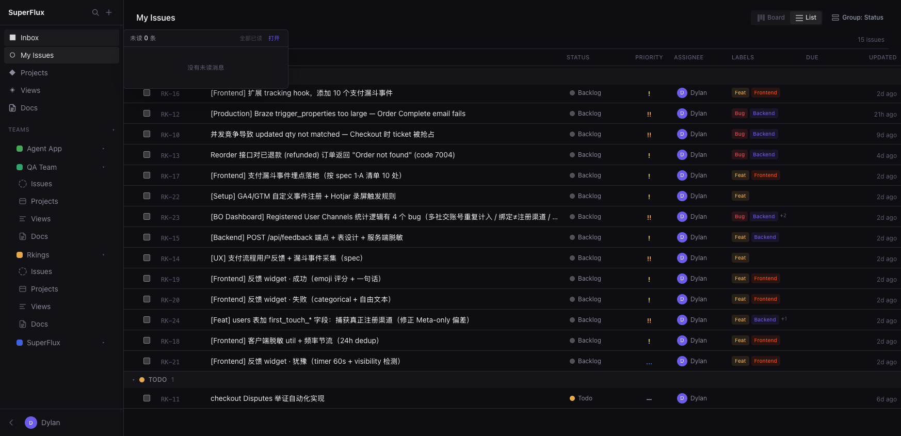
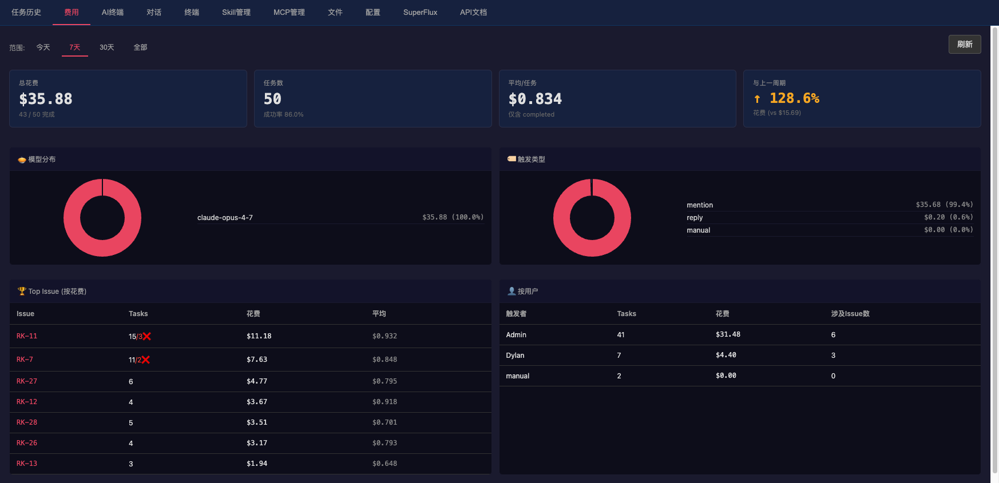
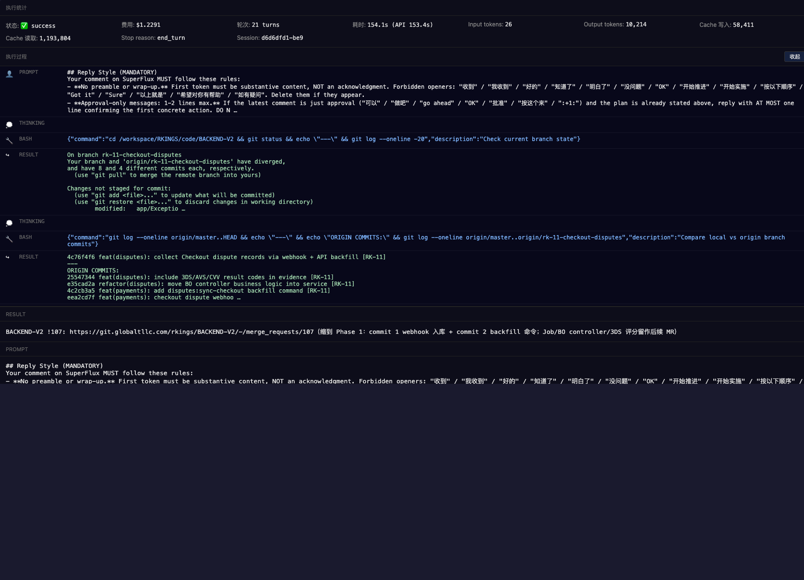

SuperFlux — AI-native project trackerSide project · Used by a team in production · 2025 — Present
OverviewSuperFlux is a Linear/Jira-style project and issue tracker, built end-to-end with Claude Code as the primary engineering tool. It replaces a traditional Jira workflow with an AI-development hub — wiring Claude Code, GitLab, and internal coding standards into a single workflow. Why it existsBuilt in spare time to answer one question: what does an AI-native team workflow look like when the project tracker is also the AI orchestration layer?
Selected screensIssue board. Linear-inspired layout with statuses, priorities, projects, and sidebar navigation — the full Jira-replacement surface.  AI cost dashboard. Per-issue and per-user accounting of Claude usage — model breakdown, trigger-source breakdown, week-over-week comparison. Built so the team can budget AI spend like infrastructure spend.  Claude task transcript. Full timeline of an AI agent's actions on an issue, including git operations, file diffs, and merge-request prep. Reviewers can audit exactly what the model did before approving the PR.  Stack
StatusIn daily use by an engineering team in production. Running behind Cloudflare Tunnel; not publicly accessible. |